Ramanujan Filter Banks for period estimation
Contents
Ramanujan Filter Banks
import numpy as np
import matplotlib.pyplot as plt
import sys, scipy
from scipy import linalg as LA
import spkit as sp
sp.__version__
'0.0.9.4'
Ramanujan Filter Banks for period estimation¶
Ramanujan Filter Banks [1] are based on the arithmetic-functions in number theory and due to interesting properties, this can be used to estimate the period of repeating patterns in a short sequence, where classical DFT fails to recognize.
The approach is based on Ramanujan sum [2], defined as:
\[c_q(n) = \sum_{k=1, gcd(k,q)=1}^{q} W_q^{kn} + \sum_{k=1, gcd(k,q)=1}^{q} W_q^{-kn}\]
where \(W_q = e^{j2\pi/q}\)
#TODO - details
References:
[1] Vaidyanathan, Palghat P., and Srikanth Tenneti. “Srinivasa Ramanujan and signal-processing problems.” Philosophical Transactions of the Royal Society A 378.2163 (2020): 20180446. [2] Ramanujan, Srinivasa. “On certain trigonometrical sums and their applications in the theory of numbers.” Trans. Cambridge Philos. Soc 22.13 (1918): 259-276.
Example demo 1¶
sp.RFB_example_1(period=10, SNR=0, seed=10)
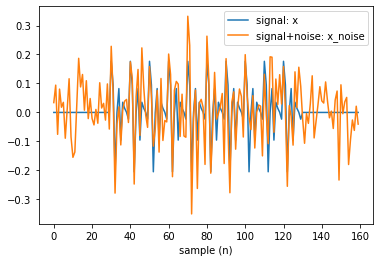
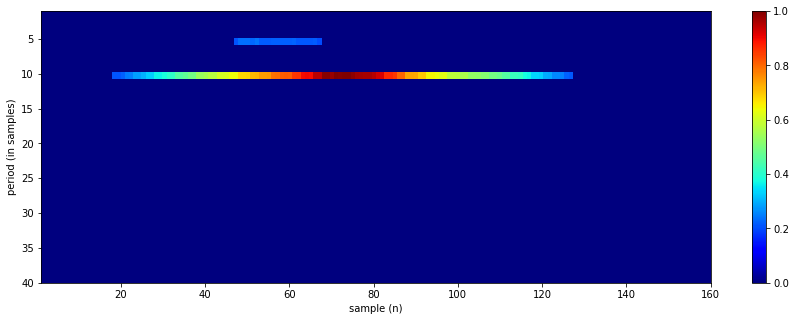
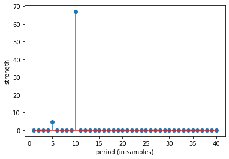
top 10 periods: [10 5 11 18 17 16 15 14 13 12]
Example demo 2¶
sp.RFB_example_2(periods=[3, 7, 11], signal_length=100, SNR=10, seed=15)
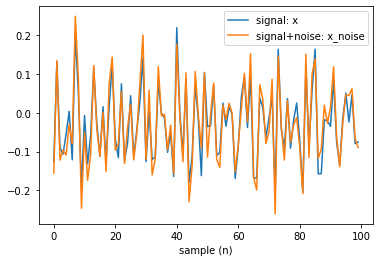
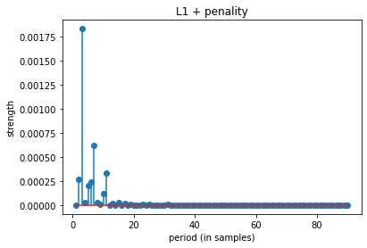
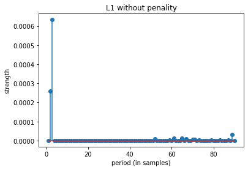
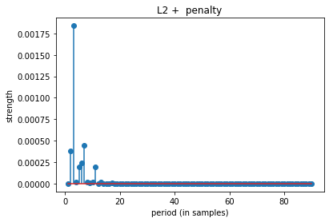
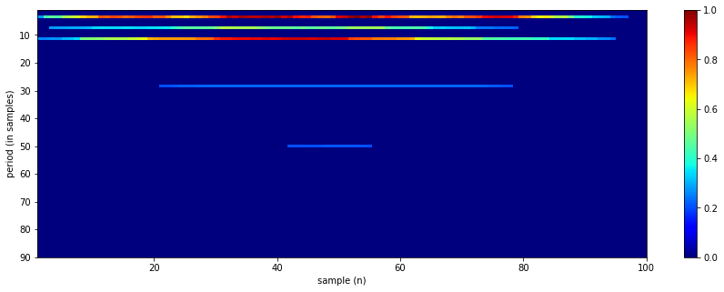
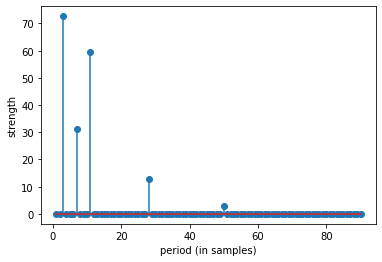
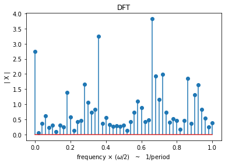
top 10 periods: [ 3 7 11 2 6 5 10 15 4 8]
top 10 periods: [ 3 2 89 65 61 67 52 71 70 79]
top 10 periods: [ 3 7 2 6 5 11 4 8 10 13]
top 10 periods: [ 3 11 7 28 50 90 34 26 27 29]
Example demo 2 with diff periods¶
sp.RFB_example_2(periods=[3,7,14], signal_length=100, SNR=10, seed=15)
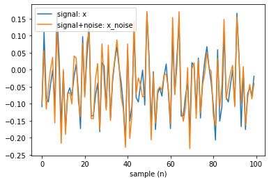
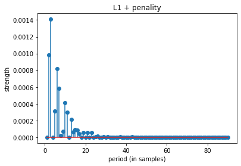
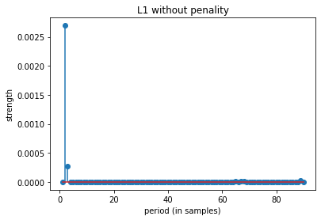
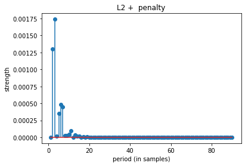
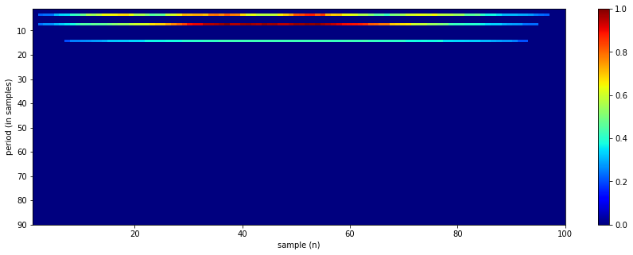
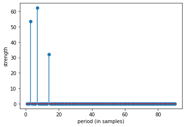
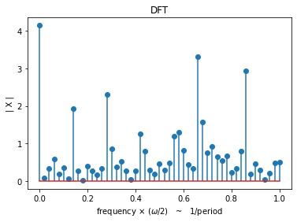
top 10 periods: [ 3 2 6 7 10 5 11 13 15 16]
top 10 periods: [ 2 3 89 65 67 68 64 61 79 87]
top 10 periods: [ 3 2 6 7 5 11 10 13 9 8]
top 10 periods: [ 7 3 14 90 34 26 27 28 29 30]
help(sp.RFB)
Help on function RFB in module core.ramanujam_methods:
RFB(x, Pmax=10, Rcq=10, Rav=2, Th=0.2, Penalty=None, return_filters=False, apply_averaging=True)
Ramanujan Filter Banks for Estimation and Tracking of Periodicity
-----------------------------------------------------------------
input
------
x = 1d array, sequence of signal
Pmax = the largest expected period.
Rcq = Number of repeats in each Ramanujan filter
Rav = Number of repeats in each averaging filter
Th = Outputs of the RFB are thresholded to zero for all values less than Th*max(output)
Penalt = penalty for each period shape=(len(Pmax)),
If None, then set to 1, means no penalty
output
------
y = 2d array of shape = (len(x),Pmax), time vs period matrix, normalized
if return_filters==True: also returns
FR = list of Ramanujan Filters
FA = list of Averaging Filters
References:
[1] S.V. Tenneti and P. P. Vaidyanathan, "Ramanujan Filter Banks for Estimation
and Tracking of Periodicity", Proc. IEEE Int. Conf. Acoust.
Speech, and Signal Proc., Brisbane, April 2015.
[2] P.P. Vaidyanathan and S.V. Tenneti, "Properties of Ramanujan Filter Banks",
Proc. European Signal Processing Conference, France, August 2015.
Python impletation is done by using matlab code version from
- http://systems.caltech.edu/dsp/students/srikanth/Ramanujan/